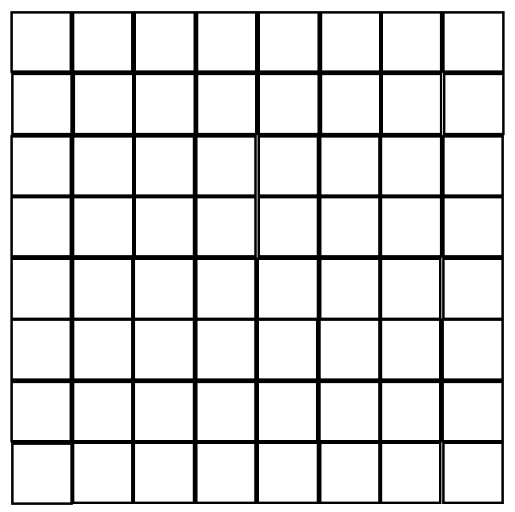
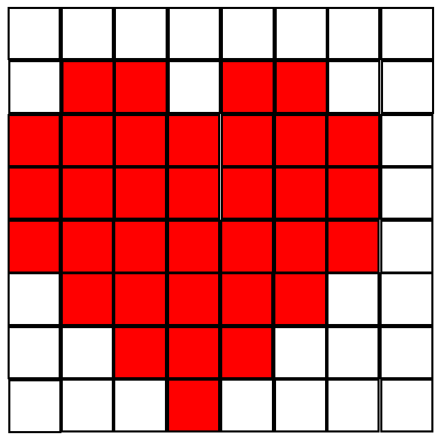

Getting Set Up
This tutorial assumes you've correctly attached the SenseHAT to your Raspberry Pi's GPIO pins. If the LEDs show a rainbow when you power on the Pi, you're all set. The tutorial also assumes that you can see your Desktop (if you're using a monitor) or Bash (if you're using SSH).
Resources
Here are links to useful resources for this project. You might want to open each one in a new tab, so you can refer to them later as you're working through this tutorial.
- SenseHAT documenation - Main Page: Installation & Basic Usage
- SenseHAT documenation - API Reference: Interacting with the SenseHAT
Let's Start Coding!
From your Terminal, navigate to the Desktop. (Remember that the dollar sign ($) is part of your Terminal; you do not need to type this in.)
Let's make a new directory to hold the Rainbow Hearts project, and then navigate into it:
$ cd pi_rainbow_hearts
To double check that we're in the right place, we can run the pwd command, which will print to our screen the file path we're currently in:
pi/Desktop/pi-rainbow-hearts [[[ DOUBLE CHECK THIS ]]]
Now that we're in the directory for the Rainbow Hearts project, we need to create a Python file to put our code in.
Let's open this file with the Raspberry Pi's built-in Python 3 IDLE, like so:
Voila! Now we're ready to write some code! We need to import two modules: 1) The SenseHAT library, so we can interact with the SenseHAT, and 2) The Time library, so we can have our hearts flash on the LED matrix for a specified amount of time:
from sense_hat import SenseHat
import time
Note that the # sign creates a comment in Python, and any line of code that starts with a # will not be run. Programmers use this feature to write notes about their code. Here, the note we see is just telling us which file we are in.
When we import SenseHat, as above, we are importing an "object" called SenseHat. Objects can have special functions attached to them (called "methods"), and we can use these special functions to make the objects do different things. We'll come back to this idea later. For right now, we want to save this SenseHat object as a variable so we can refer to the SenseHat object simply by using the variable name:
from sense_hat import SenseHat
import time
sense = SenseHat( )
If you're curious about how or why we begin our file this way, have a look at the quick set-up guide the Raspberry Pi Foundation provides for the SenseHAT.
Along with methods, objects can also have special characteristics which we call "attributes". For example, if we created a "Dog" object, the object might have attributes such as "breed" or "weight". We can store values inside these attributes, so in this example we could set
Dog.breed = "Golden Retriever"
Let's get back to the topic of writing Python code so we can interact with our SenseHAT. The LEDs are quite bright, so to make them a little dimmer, we can change the SenseHat object's "low_light" attribute to True (the default is False), as shown below:
from sense_hat import SenseHat
import time
sense = SenseHat( )
sense.low_light = True
How do we know we can change the brightness of the LEDs? Are there any other things about the SenseHAT we could change or customize? For answers to these questions, browse the SenseHAT API documentation!
Now's a good time to save your file.
If the topics of objects, methods and attributes are confusing right now, don't worry! You can still have fun and complete this tutorial even if you skip the stuff about objects. Keep going!
Choose Your Colors
Alright. We've taken care of importing things and setting up our SenseHat object. Time to choose some colors using the Red-Green-Blue (RGB) format!
RGB is a way of creating colors by mixing very specific quantities of red, green and blue. Each color (red, green or blue) can have a quantity, or concentration, of up to 255. For example, the RGB value for red is (255, 0, 0) because we list the concentrations in (RGB) order, and pure red will have no green or blue in it. This means there's a 100% concentration of red and a 0% concentration of the other colors. Likewise, the color green would have an RGB value of (0, 255, 0) and the color blue would have an RGB value of (0, 0, 255).
We'll be using colors from the rainbow for this tutorial. If you'd like to choose different colors, you can experiment with an RGB calculator to make custom colors or copy and paste the RGB codes for some common colors.
To use the rainbow colors, copy and paste this Python code into your hearts.py file, under the code we have already written. Remember, the lines of code that begin with the # sign will not be run. It's considered good practice in the programming world to use enough comments so that someone else reading your code will be able easily figure out what you are trying to do. So, we're using comments to make a note of what colors the RGB values will create.
r = (255, 0, 0)
# pink
p = (204, 0, 204)
# orange
o = (255, 128, 0)
# yellow
y = (255, 255, 0)
# green
g = (0, 255, 0)
# aqua
a = (0, 255, 255)
# blue
b = (0, 0, 255)
# purple
pr = (128, 0, 255)
# empty (no color)
e = (0, 0, 0)
Remember to save your file every time you add a new chunk of code to it!
In the code above, we are creating a new and unique variable name for each color. To keep our variable names short, we are using just the first letter of each color (with the exception of purple, because the color pink already took the "p"). Each variable stores that color's RGB value as a tuple.
A tuple is a way to store several different pieces of data as one. Python knows we're using a tuple because tuples start and end with parentheses, and contain more than one thing inside. (Even though we may see one RGB value, this RGB value is made up of 3 separate integers, each separated by commas.) When we store data in tuples, we have to separate each data point with a comma. You can read more about tuples here if you're curious about how they work.
Prepare the LEDs
The SenseHAT's LED matrix forms a square with 8 LEDs on each side, for 64 LEDs total. This 8x8 grid is the geometric space we have to work with for making the hearts appear.

Each time we want to show something on the LED matrix, we have to tell the LED matrix which (if any) of the 64 LEDs should light up, and what color they should be. In other words, we have to specify one-by-one which of the 64 tiny LEDs should light up.
The way we do this is with a list that contains 64 values inside of it -- one value per LED! Now, just observe the following code snippet (don't put this into hearts.py.) We could code a Python list with 64 values in it like this:
But this way of doing it would make it hard to see at a glance what our picture would turn out like, because the data telling which LEDs to light up is basically in one straight line. This is fine for the computer, but not so friendly for humans. [You can read more about Python lists and how they work here.]
Luckily, Python allows us to break up the values in a list into a format that is more human-readable. Again, just observe the following code; don't write this code yet. We can code the list as 8 rows of 8 values, like this:
o, o, o, o, o, o, o, o,
o, o, o, o, o, o, o, o,
o, o, o, o, o, o, o, o,
o, o, o, o, o, o, o, o,
o, o, o, o, o, o, o, o,
o, o, o, o, o, o, o, o,
o, o, o, o, o, o, o, o,
o, o, o, o, o, o, o, o
]
That is so much easier to read AND we'll get a better idea of the picture that is taking shape on the LED matrix, since the shape of the list resembles the surface area made by the 64 LEDs.
Before we go any further, we need to figure out which values in this list are going to tell the LEDs to light up, and which values in this list are going to tell the LEDs not to light up. An easy and fun way to plan your image is to simply color in squares on an 8x8 grid, like so:

We can now create a variable that will hold a list, and this list will hold the 64 LED values just as we saw above. Looking back to the code you wrote in your hearts.py file which assigned RGB values to different variables, we see that the variable "e" means "empty" (or no color) and the variable "r" means "red".
So, anywhere in our list where we want an LED to not turn on, we type "e". And anywhere in our list where we want an LED to turn on, we type the letter of the variable that contains the color we want to display. Here is what the code looks like for creating a variable called red_heart that stores the LED values following the sketch above:
e, e, e, e, e, e, e, e,
e, r, r, e, r, r, e, e,
r, r, r, r, r, r, r, e,
r, r, r, r, r, r, r, e,
r, r, r, r, r, r, r, e,
e, r, r, r, r, r, e, e,
e, e, r, r, r, e, e, e,
e, e, e, r, e, e, e, e
]
Take a minute to walk through both the grid with the heart in it and the red_heart list. Notice that each blank space in the grid is represented by an "e" in the red_heart list, and each red space in the grid is represented by an "r" in the red_heart list. Notably, the entire top row and the entire far-right column are both empty, meaning none of those LEDs will light up.
Time to code the variables for the rest of our colors! Using the red_heart list as a guide, create a new variable for each heart color you want to display on your LED matrix. Here are some things to keep in mind, especially if you are going to copy and paste:
- Every variable needs to have a unique name. Use the example for reference.
- The color in the variable name should match the color represented in your list.
- Ensure that every non-empty value in your list is for the same color. (ie: Be careful you don't miss a value, and wind up with a red heart that has one blue spot!)
If you get stuck, you can view the sample code here, which contains all the colors of the rainbow.
Your hearts.py file should now look similar to the file shown below. Remember to save your file!
from sense_hat import SenseHat
import time
sense = SenseHat( )
sense.low_light = True
# Create variables to hold each RGB color we want to use
# red
r = (255, 0, 0)
# pink
p = (204, 0, 204)
# orange
o = (255, 128, 0)
# yellow
y = (255, 255, 0)
# green
g = (0, 255, 0)
# aqua
a = (0, 255, 255)
# blue
b = (0, 0, 255)
# purple
pr = (128, 0, 255)
# empty (no color)
e = (0, 0, 0)
red_heart = [
e, e, e, e, e, e, e, e,
e, r, r, e, r, r, e, e,
r, r, r, r, r, r, r, e,
r, r, r, r, r, r, r, e,
r, r, r, r, r, r, r, e,
e, r, r, r, r, r, e, e,
e, e, r, r, r, e, e, e,
e, e, e, r, e, e, e, e
]
pink_heart = [
e, e, e, e, e, e, e, e,
e, p, p, e, p, p, e, e,
p, p, p, p, p, p, p, e,
p, p, p, p, p, p, p, e,
p, p, p, p, p, p, p, e,
e, p, p, p, p, p, e, e,
e, e, p, p, p, e, e, e,
e, e, e, p, e, e, e, e
]
orange_heart = [
e, e, e, e, e, e, e, e,
e, o, o, e, o, o, e, e,
o, o, o, o, o, o, o, e,
o, o, o, o, o, o, o, e,
o, o, o, o, o, o, o, e,
e, o, o, o, o, o, e, e,
e, e, o, o, o, e, e, e,
e, e, e, o, e, e, e, e
]
Lighting Up the LEDs
We've done a lot of prep work, and now we're in the home stretch! It's time to make our SenseHAT light up!
One strategy we could use is to loop through all of our <color>_heart variables (which hold the data about which LEDs to turn on) and have each heart light up one by one. To do this, we need to create a new variable that's going to hold a list of all of the <color>_heart variables inside.
Add the following code underneath the other code you have in your hearts.py file, making sure to replace the sample variable names with your own variable names, if the variable names you have chosen for each of your hearts are different than what is shown below. [Note: There are more colors used in the full sample code. The colors below refer only to the colors demonstrated in this tutorial.]
Next, we need to write a function that can loop through the items in the heart_colors list, and flash them on the SenseHAT's LED maxtrix one-by-one. Type the following code at the bottom of your hearts.py file, making sure to replicate the indentation. In the next section, we'll walk through what each line of code is doing.
for color in heart_colors:
sense.set_pixels(color)
time.sleep(1)
# Clear the LED display
sense.clear()
- Line 1 defines ("def") a function called "rainbow_hearts".
- Line 2 creates a for-loop that will visit, in order, each heart color (red_heart, pink_heart, orange_heart, etc.) contained within the list that we made previously, called "heart_colors".
- Line 3 makes the LEDs light up in which ever color the for-loop is currently reading, using the values you specified for that color.
- Line 4 makes the LEDs stay on for 1 second.
- Lines 3 & 4 will repeat for each color you have in your "heart_colors" list.
- Line 5 is a comment.
- Line 6 turns off the LEDs once the for-loop has run for each color you created. We know it runs after the for-loop because it is at the same indentation level as the for-loop.
We only have one more line of code we need to write! We need to call the rainbow_hearts function, so that all the code inside it will be run by the hearts.py file. If we don't call the function, our LEDs won't light up. Add this line of code to the very end of your file, and then save it:
Run Your File
Now that our file is complete, we need to run it in order to make the LEDs display our colorful hearts. Open the Raspberry Pi's Terminal. Navigate to the directory that contains the hearts.py file, and run the file:
$ python3 hearts.py
What's Next?
If you enjoyed making the Rainbow Hearts project, here are some things you can try next:
- Change the hearts to other shapes, like triangles or squares.
- Instead of a rainbow, use your school colors or favorite sports team's colors.
- Change the length of time for which the hearts (or other shapes) are displayed.